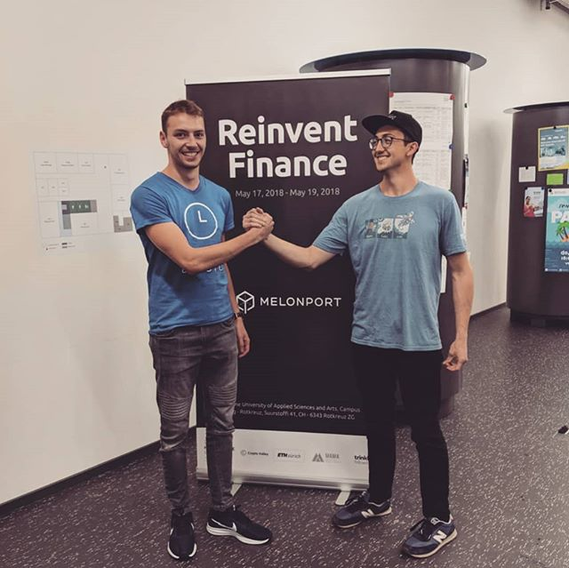

MEET OUR EXPERTS
Top 3% StackOverflow contributor with 13 000 reputation. Melonport Blockchain Hackathon "Reinvent Finance" winner. JavaScript and SPA expert with 2 video courses authored for Packt Publishing; HackerNoon author, HackHands expert, Ember teacher. Daniel has more than 6 years of JavaScript experience.


Logan and Daniel together have won Melonport Blockchain Hackathon "Reinvent Finance" Grand Prize.
Logan and Daniel together have won Melonport Blockchain Hackathon "Reinvent Finance" Grand Prize.